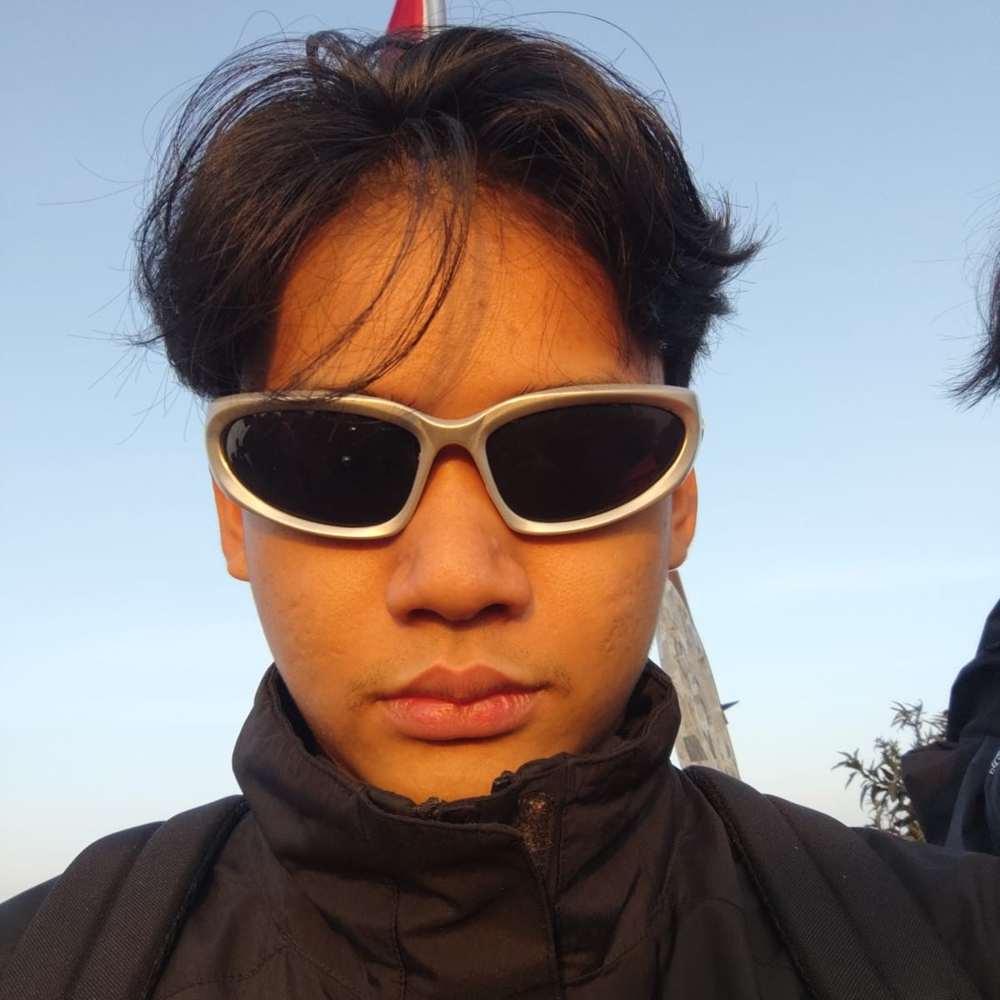

AdnanBima
Front-End & Back-End Developer
Passionate about building reliable, end-to-end web applications. Experienced in crafting intuitive user interfaces and architecting robust backend systems, including REST APIs and real-time WebSockets.
Dedicated to writing clean, maintainable code that solves real-world problems.
Core Tech: Laravel • FastAPI • Hono
15+
PROJECTS
100%
COMMITMENT
3+
YEARS EXP